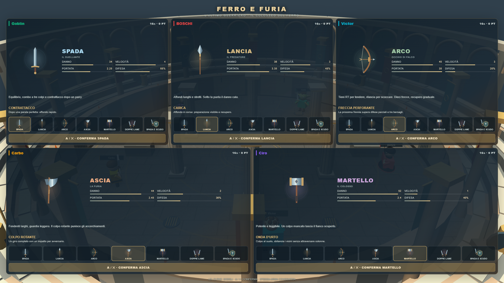
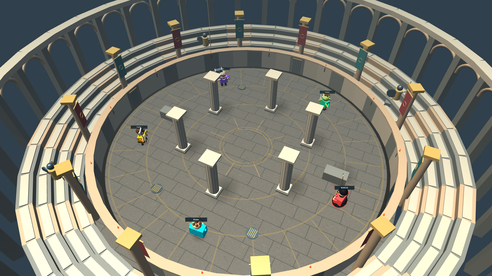
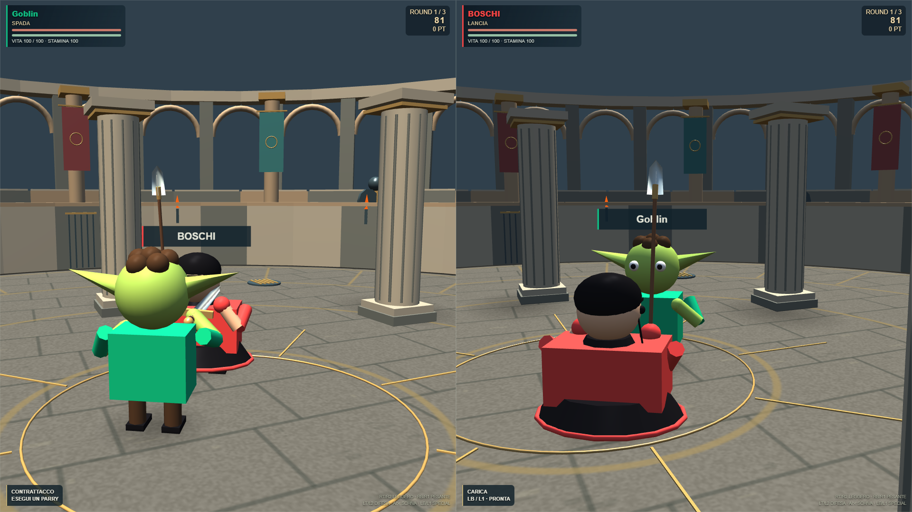
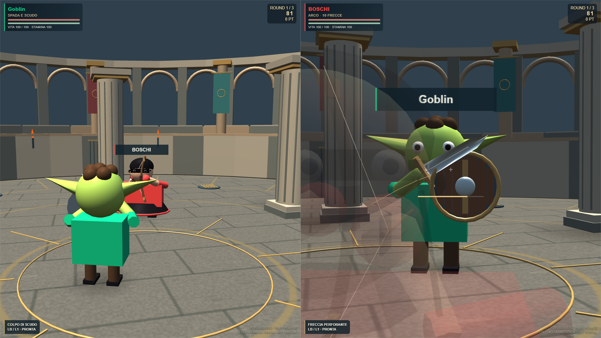

FERRO E FURIA
L’ULTIMO GUERRIERO · SETTE ARMI · TRE ROUND
2–5 partecipanti nel Colosseo del Ferro. Spada, lancia, arco, ascia, martello, doppie lame e spada con scudo: ogni arma ha tempi, portata, difesa e special differenti. Parate al momento giusto, schivate direzionali e frecce fisiche. Sopravvivenza e spareggi reali, senza vincitori casuali.
Scelta individuale con pad o telefono. Camera in terza persona e mira sulla spalla per l’arco. Soltanto gli umani hanno una visuale, mentre i bot partecipano con gli stessi attributi. Modelli, arena, effetti e audio originali; animazioni procedurali articolate, senza clip medievali professionali.
59.3FPS con cinque visuali · RTX3050 ·1920×1080 · campione locale di6secondi. Fixture con renderer e simulazione reali; non è una garanzia su altri PC.

Scelta indipendente delle sette armi
Il Colosseo del Ferro
Spada contro lancia: impugnature e finestre di attacco
Arco: tensione, mira e traiettoriaCaricamento definitivo e Backrooms
Barra di attesa finché modelli, texture e shader sono pronti. Il countdown rimane fermo e le armi provvisorie non vengono mostrate. Verificato anche con download GLB rallentati. Nelle Backrooms sprint ridotto da circa7 a4secondi, con recupero e soglia di ripartenza.
Test mirati, sessione con due umani, pad simulato e telefono, cinque visuali, caricamento rallentato, typecheck e build. Nessun controller fisico provato. Nessun commit, push o deploy.
Verifiche · Apri il gioco